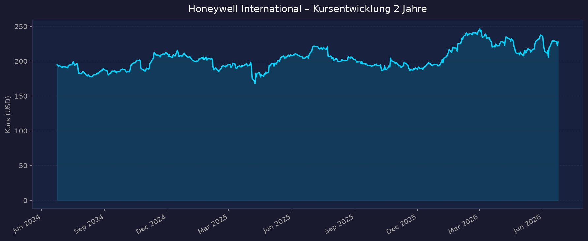
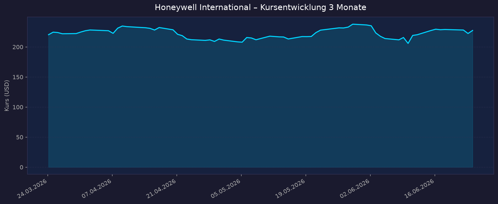

Einordnung: Indirekter Weltraum-Play — Honeywell ist ein diversifizierter Industriekonzern, dessen Aerospace-Segment (Avionik, Navigation/Sensorik, Defense & Space) den konkreten Weltraum-Bezug liefert. Das Unternehmen steht kurz vor seiner historischen Aufspaltung: Am 29. Juni 2026 wird Honeywell Aerospace (Ticker: HONA) als eigenständiges Unternehmen an die Nasdaq abgespalten. Die verbleibende Gesellschaft heißt ab dann Honeywell Technologies und bleibt unter dem Ticker HON als Pure-Play-Automatisierungskonzern an der Börse.
📈 1. Kursentwicklung
Aktueller Kurs: 227,40 USD | Beta: 0,84 (defensiv)
Chart – 2 Jahre

Chart – 3 Monate

| Zeitraum | Kurs Start | Kurs Ende | Veränderung |
|---|---|---|---|
| 2 Jahre | 195,03 USD | 227,40 USD | +16,6 % |
| 3 Monate | 220,36 USD | 227,40 USD | +3,2 % |
| 52-Wochen-Hoch | — | 248,18 USD | — |
| 52-Wochen-Tief | — | 186,76 USD | — |
Kursbewertung: HON erholte sich deutlich vom 52-Wochen-Tief und notiert ~8 % unter dem Jahreshoch. Nach dem Q1-2026-Report (EPS-Beat, Umsatz-Miss) fiel die Aktie vorbörslich ~5 % auf ~209 USD, hat sich seitdem stabilisiert und erholt. Der Spin-off-Katalysator dominiert den Kursverlauf 2026.
💹 2. KGV-Entwicklung (Kurs-Gewinn-Verhältnis)
Aktuelles KGV (trailing): 36,3 | Forward-KGV: 19,9
Hinweis: Das hohe Trailing-KGV ist durch Spin-off-Sonderbelastungen und die Abspaltung von Solstice Advanced Materials (Okt. 2025) verzerrt. Das Forward-KGV von ~20x spiegelt die bereinigte Ertragskraft besser wider.
| Zeitraum | KGV (trailing) | Einordnung |
|---|---|---|
| Jun 2026 (aktuell) | 35,8 | Erhöht — Spin-off-Sondereffekte verzerren |
| Dez 2025 | 26,5 | Moderat — leicht über historischem Schnitt |
| Dez 2024 | 25,9 | Im Rahmen des 5J-Schnitts |
| Dez 2023 | 24,8 | Leicht unter 5J-Schnitt (fair bewertet) |
| Dez 2022 | 29,5 | Erhöht — Hochzinsphase drückte Kurse kaum |
| Dez 2021 | 26,4 | Am 5J-Schnitt |
| 5J-Durchschnitt | ~24,4 | Referenzwert |
| 10J-Durchschnitt | ~27,0 | Langfristiger Ankerpunkt |
Bewertung: Das bereinigte Forward-KGV von ~20x liegt attraktiv unter dem historischen Schnitt. Nach dem Spin-off werden die getrennten Unternehmen (Automation vs. Aerospace) eigenständig bewertet — Analysten erwarten eine Sum-of-the-Parts-Prämie (~307 USD Kursziel auf EBITDA-Basis laut Medianschätzung).
💰 3. Sales Multiple (Kurs-Umsatz-Verhältnis / P/S)
Aktuelles P/S-Verhältnis: 3,83 (TTM-Umsatz: ~37,5 Mrd. USD)
| Zeitraum | P/S Ratio | Einordnung |
|---|---|---|
| Jun 2026 (aktuell) | 3,85 | Leicht erhöht vs. historisch |
| Dez 2025 | 3,31 | Unter historischem Mittel |
| Dez 2024 | 4,23 | Über historischem Mittel |
| Dez 2023 | 4,14 | Über historischem Mittel |
| Dez 2022 | 4,03 | Leicht über historischem Mittel |
| Dez 2021 | 4,15 | Leicht über historischem Mittel |
Trend: Das P/S stieg gegenüber dem Tief Ende 2025 (3,31) wieder an. Für einen diversifizierten Industriekonzern liegt 3,8x im oberen normalen Bereich. Nach dem Spin-off wird Honeywell Technologies als Pure-Play-Automation voraussichtlich mit Aufschlag bewertet (Peer-Vergleich: Emerson ~3,5x, Rockwell ~4,5x P/S).
📊 4. Handelsvolumen (Trading Volume)
| Zeitraum | Ø Tagesvolumen | Auffälligkeiten |
|---|---|---|
| 10-Tage-Durchschnitt | ~5,6 Mio. Aktien | Erhöht — Spin-off-Aktivität |
| 3-Monats-Durchschnitt | ~4,4 Mio. Aktien | Normales institutionelles Niveau |
| Volumenpeak Q1 2026 | deutlich über Schnitt | Post-Earnings-Sell-off (April 2026) |
Volumentrend: Erhöhtes Handelsvolumen gegenüber historischen Werten — Spin-off-Ankündigungen und Restrukturierungsmaßnahmen haben das institutionelle Interesse und den Portfolioumschlag gesteigert. Aktienanzahl ausstehend: ca. 633,6 Mio.
🏦 5. Insider Trades (letzte 2 Jahre)
| Datum | Name | Funktion | Transaktion | Aktien | Kurs |
|---|---|---|---|---|---|
| Jun 2026 | Vimal Kapur | CEO | RSU-Vesting / Steuerabführung (868 Aktien einbehalten) | 1.997 RSUs ausgeübt | ~234,99 USD |
| Feb 2026 | Vimal Kapur | CEO | RSU-Vesting / Steuerabführung (494 Aktien einbehalten) | 1.135 RSUs ausgeübt | ~242,08 USD |
| 2025–2026 | Diverse Executives | CFO, Board | Confirming Statements / RSU-Vesting | Routinemäßig | — |
3-Monats-Überblick: Ausschließlich routinemäßige RSU-Vesting-Transaktionen des CEO (Steuerabführungs-Dispositionen). Keine signifikanten Direktkäufe oder diskretionären Verkäufe.
2-Jahres-Überblick: Dominiert durch equity-kompensationsgetriebene Transaktionen. Kein Signal für ungewöhnliches Insider-Kaufinteresse oder erhöhten Verkaufsdruck. Typisch für einen Large-Cap-Konzern in Umstrukturierungsphase.
Quelle: SEC Edgar Form 4 / StockTitan / Quiver Quantitative
🩳 6. Short-Positionen
Aktuelle Short Quote: ~2,18 % des Streubesitzes (Float) | Short Ratio: 3,25 Tage
| Zeitraum | Short Interest | Veränderung |
|---|---|---|
| Jun 2026 (aktuell) | ~2,2 % | — |
| Historischer Verlauf | nicht verfügbar (quartalsweise) | — |
Einschätzung: Mit 2,18 % Short-Quote ist HON sehr niedrig geshortet. Für einen S&P-500-Industriekonzern dieser Größe signalisiert dies geringe Skepsis unter Short-Sellern. Ein Short Ratio von 3,25 Tagen stellt kein Squeezerisiko dar, bedeutet aber auch keinen Gegenwind. Das niedrige Short-Interest bestätigt die grundsätzlich positive Marktwahrnehmung.
🗞️ 7. Aktuelle Nachrichten
| Datum | Quelle | Nachricht | Relevanz |
|---|---|---|---|
| 29. Jun 2026 (geplant) | Honeywell IR | Spin-off Honeywell Aerospace (HONA): Aktionäre erhalten 1 HONA-Aktie je 2 HON-Aktien | Hoch |
| 15. Jun 2026 | Nasdaq / Honeywell IR | Vorläufiger Handel unter HONAV gestartet; Board genehmigt Spin-off formal; Record Date gesetzt | Hoch |
| Jun 2026 | CNBC | Quantinuum IPO: $1,68 Mrd. eingesammelt, Marktwert $15,7 Mrd. — Honeywell behält ~48 % Stimmrechte | Hoch |
| 23. Apr 2026 | Investing.com | Q1 2026: EPS $2,45 geschlagen (+5,6 %); Umsatz $9,14 Mrd. verfehlt (–1,5 %); Aktie –5 % vorbörslich | Mittel |
| Apr 2026 | Goldman Sachs (Finviz) | Goldman Sachs erhöht Kursziel für HON nach Re-Segmentierungs-Update | Mittel |
| Jan 2026 | Honeywell / SEC | Q4 2025 über Guidance: Adj. Umsatz $10,1 Mrd. (+11 % organisch), Adj. EPS $2,59 (+17 %) | Hoch |
| Okt 2025 | Honeywell | Abspaltung Solstice Advanced Materials abgeschlossen — Portfoliobereinigung Stufe 1 | Mittel |
| Okt 2025 | Honeywell IR | Q3 2025 Record-Backlog >$37 Mrd.; Guidance für FY2025 angehoben | Mittel |
| Lfd. 2026 | StockTitan | Verkauf des Water & Workflow Solutions (WWS)-Segments angekündigt | Niedrig |
| Jun 2026 | TheStreet / Tickeron | Analysten sehen SOTP-Kursziel ~$307 nach Spin-off; Honeywell Technologies als Pure-Play-Automation bewertet | Mittel |
Sentiment: Überwiegend positiv — der Spin-off-Katalysator dominiert die Berichterstattung. Kurzfristige Umsatz-Misses (Q1 2026) durch geopolitische Spannungen werden durch EPS-Stärke und Margenexpansion kompensiert.
📋 8. Letzte 3 Quartalsberichte
Q1 2026 (gemeldet 23. April 2026)
| Kennzahl | Ist | Erwartung | Abweichung |
|---|---|---|---|
| Umsatz (Revenue) | 9,14 Mrd. USD | 9,28 Mrd. USD | –1,5 % (Miss) |
| EPS (bereinigt) | 2,45 USD | 2,32 USD | +5,6 % (Beat) |
| EPS (GAAP) | 1,29 USD | — | — |
| Segment Margin | 23,3 % | — | +90 BP YoY |
| Nettomarge | ~8,7 % | — | Gedrückt durch Sonderposten |
| Free Cashflow | –873 Mio. USD | — | Saisonal negativ (Q1 typisch) |
Guidance: Jahresprognose FY2026 bestätigt: Adj. EPS $10,35–$10,65, Umsatz $38,8–$39,8 Mrd.
Kursreaktion: –5,0 % vorbörslich (~208,92 USD); Erholung auf ~227 USD in den Folgewochen.
Q4 2025 (gemeldet 29. Januar 2026)
| Kennzahl | Ist | Erwartung | Abweichung |
|---|---|---|---|
| Umsatz (bereinigt) | 10,07 Mrd. USD | ~9,8 Mrd. USD | Beat |
| Umsatz (GAAP) | 9,76 Mrd. USD | — | +6 % YoY |
| EPS (bereinigt) | 2,59 USD | ~2,43 USD | Beat |
| EPS (GAAP) | 0,49 USD | — | –72 % YoY (Sonderposten) |
| Segment Margin (bereinigt) | 22,8 % | — | +240 BP YoY |
| Free Cashflow | 2,51 Mrd. USD | — | +48 % YoY |
| FY2025 FCF gesamt | 5,10 Mrd. USD | — | +20 % YoY |
Guidance: FY2026: Umsatz $38,8–$39,8 Mrd. (3–6 % organisch), Adj. EPS $10,35–$10,65 (+6–9 %), FCF $5,3–$5,6 Mrd.
Kursreaktion: Positiv; Aktie über Guidance-Niveau.
Q3 2025 (gemeldet 23. Oktober 2025)
| Kennzahl | Ist | Erwartung | Abweichung |
|---|---|---|---|
| Umsatz (Revenue) | 10,41 Mrd. USD | 10,15 Mrd. USD | +2,6 % (Beat) |
| EPS (bereinigt) | 2,82 USD | 2,57 USD | +9,9 % (Beat) |
| Organisches Wachstum | +6 % | — | — |
| Nettomarge | ~17,9 % | — | Stark |
| Free Cashflow | 2,91 Mrd. USD | — | Sehr stark |
| Backlog | >37 Mrd. USD | — | Rekordniveau |
Guidance: FY2025 angehoben auf ~6 % organisches Wachstum; Adj. EPS-Midpoint $10,65 (+1,9 % vs. vorherige Guidance).
Kursreaktion: Positiv; double-digit Wachstum in Commercial Aftermarket und Defense & Space hervorgehoben.
🌍 9. Marktkontext & Wettbewerb
Markt / Branche: Diversifizierter Industriekonzern (Industrials) mit Schwerpunkten Aerospace & Defense sowie Industrial Automation. Nach dem Spin-off (29. Jun 2026) entstehen zwei eigenständige Pure-Play-Unternehmen.
Weltraum- und Luft-/Raumfahrt-Bezug (Honeywell Aerospace / HONA)
Honeywell Aerospace ist ein indirekter Weltraum-Play — kein Raketenhersteller, sondern hochspezialisierter Systemzulieferer:
- Avionik & Navigation: Honeywell-Avioniksysteme sind in ~90 % aller weltweit eingesetzten Flugzeuge verbaut (Anthem Integrated Flight Deck, Primus Epic). Für den Weltraum liefert Honeywell Inertialsensoren, Sternensensoren und Navigationseinheiten für Satelliten.
- Defense & Space: 7 aufeinanderfolgende Quartale mit zweistelligem organischem Wachstum (2024–2025). Kunden: Boeing, Lockheed Martin, Northrop Grumman, BAE Systems, Leonardo, RTX. Produkte: Anti-Jamming-Navigation, Leistungsmanagement, Elektronische Kriegsführung, Satelliten-Thermalmanagement.
- Weltraum-Systemkomponenten: Satellitenkomponenten für LEO/MEO-Konstellationen, Navigation und Autonomie-Sensorik. Indirekte Nachfrage durch SpaceX-Ecosystem und New-Space-Player.
- Quantinuum (48 % Stimmrecht nach IPO Jun 2026): Honeywell hält einen strategischen Anteil am Quantencomputer-Unternehmen Quantinuum (Marktwert: $15,7 Mrd. nach IPO Jun 2026, Bewertung $10 Mrd. Pre-Money Sep 2025). Kein direkter Weltraum-Asset, aber optionaler Wert-Katalysator im Verteidigungsbereich.
SpaceX-IPO-Kontext (12. Jun 2026): Der SpaceX-Börsengang (SPCX, ~$1,75 Bio. Bewertung) hat den Weltraum-Sektor befeuert. HON profitiert indirekt als Systemzulieferer: mehr Satelliten-Launches bedeuten mehr Bedarf an Honeywell-Navigationssystemen und Satelliten-Komponenten. Anders als reine Pure-Plays (Rocket Lab, AST SpaceMobile) hat HON durch den SPCX-IPO keine Kurseinbußen erlitten — die Marktbewegung wirkt hier als struktureller Rückenwind.
Wettbewerber
| Wettbewerber | Segment | Stärke | Schwäche |
|---|---|---|---|
| RTX (Collins Aerospace / Pratt & Whitney) | Avionik, Triebwerke, Defense | Triebwerkstechnologie, F-35-Abhängigkeit | Höhere Schuldenlast, weniger Automation |
| GE Aerospace | Triebwerke, Antriebe | #1 Triebwerkshersteller, starker Aftermarket | Geringere Sensor/Avionik-Breite |
| Safran | Avionik, Navigation, APU | Europäische Defense-Stärke, LEAP-Triebwerk | Währungsrisiko EUR/USD |
| Garmin | Avionik (General Aviation) | Preis-Leistung, starke Marke | Kein Defense-/Space-Fokus |
| Parker Hannifin | Motion Control, Aerospace-Systeme | Breite Portfolio-Diversifikation | Weniger digitale/Software-Kompetenz |
| Emerson Electric | Industrial Automation | Starke Process-Automation-Position | Schwächer in Aerospace |
| Rockwell Automation | Factory Automation | Pure-Play-Automation-Margen | Kein Aerospace-Exposure |
Branchentrends:
- New-Space-Infrastruktur: Wachsende Satellitenkonstellation (Starlink, OneWeb, Project Kuiper) treibt Nachfrage nach Honeywell-Komponenten (Navigation, Sensorik, Thermalmanagement).
- Defense-Budgets: NATO-Länder erhöhen Verteidigungsausgaben auf 2 %+ BIP; US-DoD-Budget auf Rekordniveau → struktureller Rückenwind für Honeywell Aerospace.
- Automation-to-Autonomy: Honeywell Technologies (nach Spin-off) positioniert sich als Brücke zwischen klassischer Industrieautomation und autonomen Systemen — wachstumsstarker Megatrend.
Marktposition: Honeywell ist in beiden Kernmärkten (Aerospace-Systeme und Industrial Automation) unter den globalen Top-3-Playern. Keine Nischenposition — breite, gut verteidigte Marktanteile. Der Spin-off schärft die Positionierung beider Einheiten und ermöglicht höhere Bewertungsmultiples.
Risiken aus dem Marktumfeld:
- Geopolitische Spannungen / US-Handelskonflikt (Q1-2026-Umsatz-Miss als konkretes Warnsignal)
- Exportkontrollen im Defense-Bereich möglich
- Separationskosten ($1,5–2,0 Mrd. USD einmalig)
- Flexjet-Rechtsstreit ($312 Mio. Umsatzbuchhaltungskorrektur in Q4 2025; Ausgang offen)
🧮 Bewertungs-Score
| Kriterium | Score (1–10) | Begründung |
|---|---|---|
| Bewertung (KGV/P/S vs. Peers) | 7 | Forward-KGV ~20x attraktiv unter 5J-Schnitt 24x; P/S 3,8 moderat für die Qualität; SOTP-Prämie noch nicht voll eingepreist |
| Wachstum & Momentum | 6 | Q3/Q4 2025 stark (+6–11 % organisch); Q1 2026 leichte Umsatzschwäche; Record-Backlog >$37 Mrd. gibt Visibilität; 3–6 % Guidance 2026 konservativ |
| Bilanz & Sicherheit | 5 | Debt/Equity 2,70 (141 % über 10J-Median); Total Debt $37,75 Mrd. vs. Cash $12,39 Mrd. (Net Debt ~$25 Mrd.); Separationskosten belasten; FCF-Generierung stark ($5,1 Mrd. FY2025) mildert Risiko |
| Qualität & Wettbewerbsposition | 8 | Avionik in ~90 % aller Flugzeuge; 7 Quartale double-digit Defense-Wachstum; starke FCF-Generierung; 16 Jahre Dividendenwachstum; Quantinuum-Stake als werthaltiger Option |
| Chancen vs. Risiken | 7 | Spin-off als struktureller Katalysator; Defense-Boom; New-Space-Nachfrage; Gegen: hohe Schulden, Separationskosten, Geopolitik |
Gewichteter Gesamtscore: 6,6 / 10
(Gewichtung: Bewertung 20 %, Wachstum 20 %, Bilanz 20 %, Qualität 25 %, Chancen/Risiken 15 %)
📅 5-Jahres-Szenario (Kurs 2031)
| Szenario | Annahmen | Kurs 2031 | Gesamtrendite (inkl. Dividende) |
|---|---|---|---|
| Bär | Spin-off-Kosten überlasten Bilanz; organisches Wachstum stagniert 1–2 %; Automation-Markt verliert Anteile; Dividende stagniert | ~160 USD | –20 bis –25 % |
| Base | Spin-off gelingt wie geplant; Honeywell Technologies wächst 4–6 % p.a.; HONA profitiert von Defense-Trend; Schuldabbau durch FCF; Dividende +5 % p.a. | ~310 USD | +40–50 % (inkl. ~12 % Dividenden kumuliert) |
| Bull | SOTP-Prämie voll eingepreist; Automation erhält Rockwell-ähnliche Multiples; HONA als führender Tier-1 mit 15× EV/EBITDA; Quantinuum-Stake wertet stark auf | ~420 USD | +90–100 % |
Basispreis: 227,40 USD (24. Jun 2026). Dividende: 4,76 USD p.a. (Yield ~2,1 %; 16 aufeinanderfolgende Erhöhungsjahre). Base-Case setzt ~10 % EPS-CAGR und KGV-Normalisierung auf ~22x voraus.
📝 Gesamteinschätzung
Stärken:
- Historischer Katalysator: Spin-off am 29. Jun 2026 trennt Aerospace (HONA) von Automation (HON) — Sum-of-the-Parts-Value unlock mit ~307 USD Analystenmedian-Kursziel
- Weltmarktführer in Avionik: Systeme in ~90 % aller Flugzeuge verbaut; hochprofitables Aftermarket-Geschäft mit langer Laufzeit
- Defense & Space Strukturwachstum: 7 Quartale zweistelliges organisches Wachstum; Record-Backlog >$37 Mrd. sichert Umsatzvisibilität bis 2027+
- Dividendenaristokrat: 16 Jahre consecutives Dividendenwachstum; 4,76 USD p.a. (Yield ~2,1 %)
- Quantinuum-Option: ~48 % Stimmrechte am Quantencomputer-Player (Marktwert $15,7 Mrd. nach IPO Jun 2026) — noch nicht voll im HON-Kurs reflektiert
- Indirekter Space-Katalysator: SpaceX-Ecosystem und New-Space-Boom treiben langfristig Nachfrage nach Honeywell-Navigations- und Satelliten-Komponenten
Risiken:
- Hohe Verschuldung: Debt/Equity 2,70 — 141 % über historischem 10J-Schnitt; Schuldenabbau nach Spin-off ist entscheidend
- Separationskosten: $1,5–2,0 Mrd. Einmalkosten; GAAP-EPS bleibt durch Sonderposten verzerrt
- Geopolitik / Handelskonflikt: Q1-2026-Umsatz-Miss als konkretes Warnsignal; Exportkontrollen im Defense-Bereich möglich
- Flexjet-Litigation: $312 Mio. Umsatzkorrektur (Q4 2025); rechtlicher Ausgang offen
- Post-Spin-off-Unsicherheit: Honeywell Technologies als Pure-Play-Automation muss neues institutionelles Anlegeruniversum überzeugen; kurzfristige Index-Rebalancierungen möglich
Fazit: Honeywell International ist ein indirekter, aber substanzieller Weltraum-Play mit einer der stärksten Positionen im globalen Aerospace-Zulieferermarkt. Das Unternehmen steht unmittelbar vor seiner wertvollsten strategischen Transformation: Die Abspaltung von Honeywell Aerospace (HONA) am 29. Juni 2026 schafft zwei fokussierte Pure-Play-Unternehmen mit eigenem Anlegeruniversum und eigenem Bewertungsmaßstab. Das Forward-KGV von ~20x ist attraktiv gemessen am historischen Schnitt und dem Record-Backlog; die hohe Verschuldung und die Separationskosten sind die wesentlichen kurzfristigen Risikofaktoren. Für langfristig orientierte Anleger mit Geduld für die Übergangsphase bietet HON ein attraktives Rendite-Risiko-Profil mit intakter Dividende und klarem Value-Unlock-Katalysator durch den bevorstehenden Spin-off.
Datenquellen: Yahoo Finance / yfinance · StockAnalysis.com · MacroTrends · Honeywell Investor Relations (SEC 8-K, 10-Q) · Investing.com · StockTitan · Quiver Quantitative · The Motley Fool · CNBC · TheStreet · IndexBox · Tickeron · FinanceCharts · Gurufocus · Divergent Capital Substack
Keine Anlageberatung — rein informative Auswertung öffentlicher Daten.